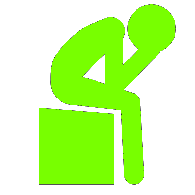
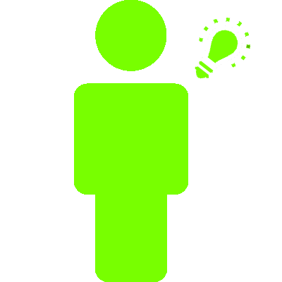

De acordo com um estudo de 2006, 1 em 8 pessoas sofrem de vício em Internet.

Mas o que é o Vício em Internet?
O vício em internet é descrito como um transtorno de controle de impulsos, que não envolve drogas intoxicantes e é similar ao vício em jogos de azar. O paciente do transtorno cria uma dependência emocional às atividades exercidas online, seja por dificuldade de exercer atividades sociais na vida real, por usar as mesmas como uma forma de escapismo para problemas externos, ou qualquer outro motivo. Em especial, pessoas com baixa auto-estima se veem criando personas (modos de se comportar) e identidades on-line para compensarem por defeitos percebidos pela pessoa.
Causas do Transtorno
Possiveis causas de vício em internet incluem:
- Uso da internet como uma forma de mitigar outro transtorno mental
- Vício por informação: Algumas pessoas mostram grande interesse em obter informação, que se encontra de forma extremamente acessível e abundante na Internet. Desta forma, alguns acabam se sentindo muito recompensados ao procurar informações na internet, tornando seu interesse em um vício.
- Ansiedade ou transtornos sociais: o paciente encontra mais facilidade em fazer interações sociais online.
- Mudança de outro vício: Viciados em jogos de azar e compras na vida real podem transicionar a fazer estas atividades online.

Indícios do Transtorno
Alguns indícios de vício em internet são:
- Uso do computador ou aparelho celular por uma quantidade de tempo excessiva, tendo que usar mais e mais para obter o prazer procurado
- Irritabilidade, tédio, tristeza, reclusão social, procrastinação e baixa auto-estima quando está fora dos aparelhos eletrônicos
- Problemas médicos provenientes do uso aumentado dos aparelhos eletrônicos, como dor nas costas, dores de cabeça, síndrome do túnel carpal, hábitos alimentares irregulares e distúrbios do sono
- Tentativas falhas de diminuir o uso dos aparelhos

Repercussões do Transtorno
O paciente deste transtorno frequentemente tem sua relação com seus familiares deteriorada, além de serem vistos como socialmente estranhos ou ineptos por outras pessoas por causa de sua reclusão. Assim como em outros transtornos de controle de impulsos, a vida acadêmica, social, romântica e/ou finaceira do indivíduo se vê afetada pelo seu exercício excessivo da atividade em questão.
Tratamentos do Transtorno
Alguns tipos de terapia para o transtorno são:

Prevenção do Transtorno
Algumas medidas preventivas para o vício em Internet são:
- Procurar tratamento profissional para outros transtornos mentais que podem engatilhar um vício
- Fazer o controle do tempo que se passa usando aparelhos eletrônicos
- Procurar gerenciar o estresse com métodos como meditação, yoga e respiração profunda
- Engajar-se em atividades como socialização, leitura e exercício
- Procurar suporte familiar